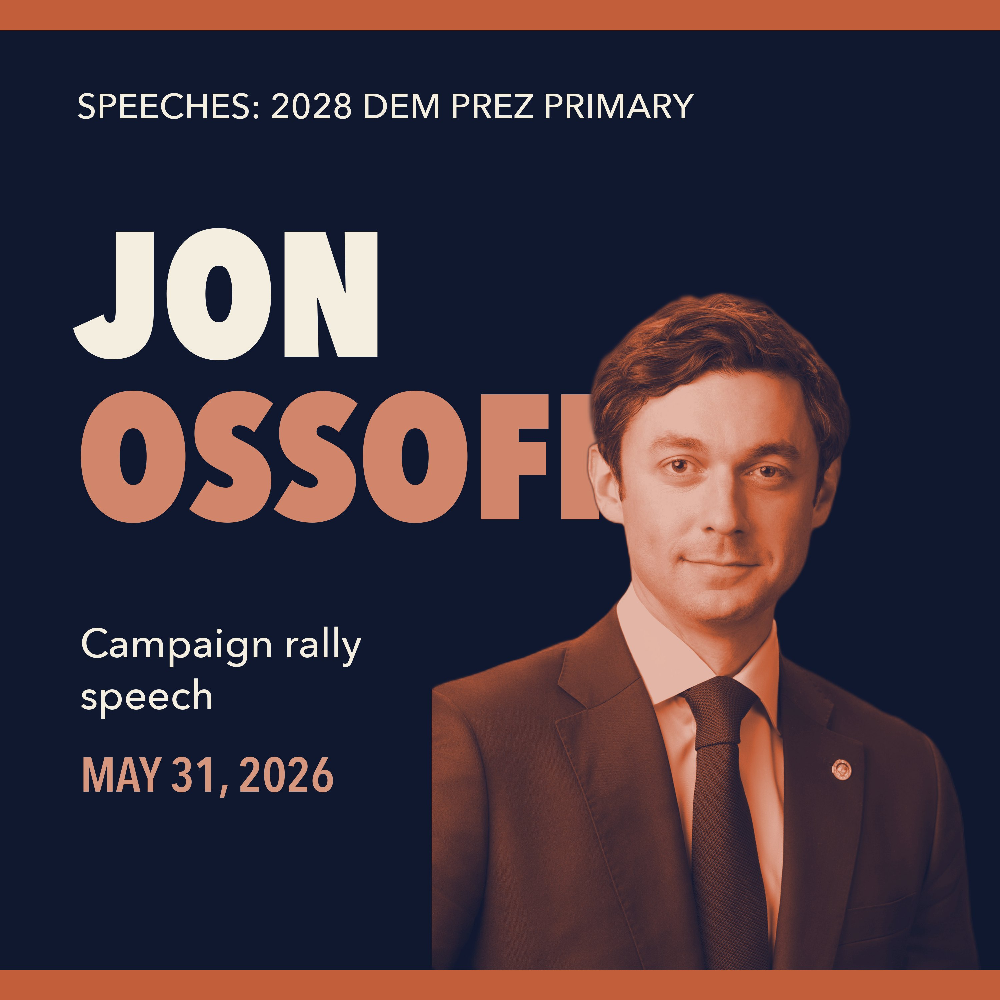

Ep. 17 — Jon Ossoff — "Something is happening in Georgia" (May 31, 2026)
May 31, 2026 · 0:32:37
Sen. Jon Ossoff — the only Democratic senator up for re-election in 2026 in a state Trump won — rallies supporters in Atlanta on May 31, 2026, declaring 'something is happening in Georgia' in the marquee Senate race of the midterms.